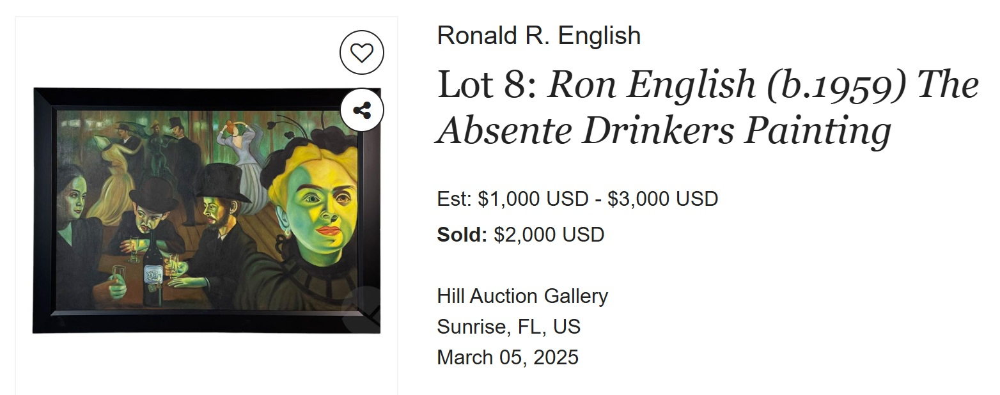

Exhibitions
POWER PATHOS, Station Museum of Contemporary Art, Houston, Texas, US, June 21–September 24, 2006.
Literature
Ron English, Abject Expressionism: The Art of Ron English (San Francisco: Last Gasp, 2007), p. 52. ISBN 978-0867196894.
Ron English, Son of Pop: Ron English Paints His Progeny (San Francisco, California: 9mm Books and The Shooting Gallery, 2007), p. 30. ISBN 978-0-9766325-1-1.
Ron English, Fauxlosophy (Darlington: Carpet Bombing Culture, 2016), p. 152. ISBN 978-1-908211-45-3.
Ron English, Original Grin: The Art of Ron English (Paris: Cernunnos, 2019), p. 46. ISBN 978-2374950938.
Notes
The work is recorded on Invaluable’s auction lot page, available here, accessed April 8, 2026.
In Abject Expressionism, Son of Pop, and Original Grin, this work was erroneously reported as 50 × 36 inches.
This work references Henri de Toulouse-Lautrec’s At the Moulin Rouge.

Ancillary Documentation
